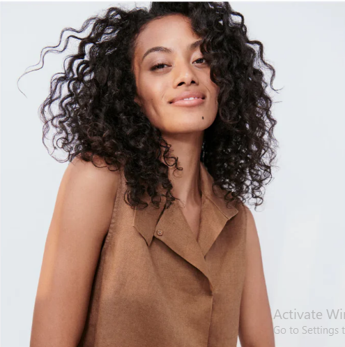

sustainability
Caring For Our Planet
Sustainability is a core pillar at Lunya, and one that we are constantly reviewing, researching, and reevaluating.
We are working towards being a more responsible business everyday, and are committed to minimizing our impact. We've taken steps big and small, such as the use of responsible fabrics, including organic and natural fibers, and the implementation of environmentally-conscious processes (like more earth friendly blue sign dyes) that are better for you (and kinder on the planet). While we are always a work in progress, you can trust us when we say that our sustainability goals are more ambitious than waking up before the alarm